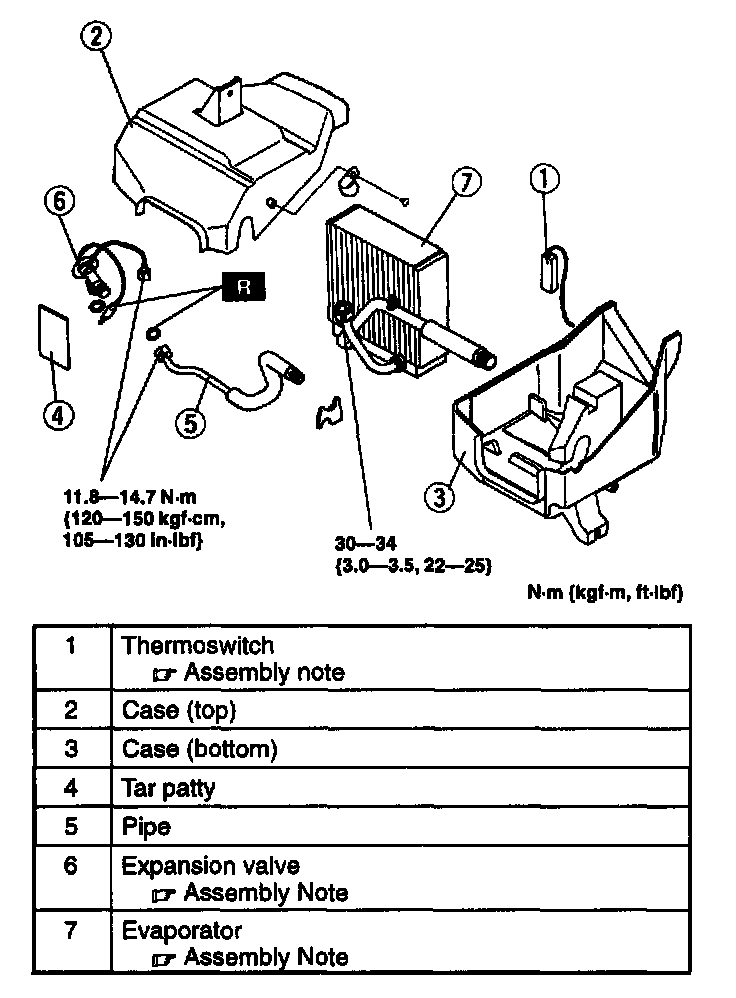
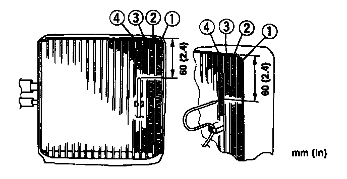

Disassembly and Assembly
COOLING UNIT DISASSEMBLY/ASSEMBLYCAUTION: If moisture of foreign material enters the refrigeration cycle, cooling ability will be lowered and abnormal noise will occur. Always Immediately plug all open fittings after removing any refrigeration cycle parts to keep moisture or foreign material out of the cycle.

1. Disassemble in the order indicated in the table.
2. Assemble in the reverse order of disassembly.
Evaporator Assembly Note
- When installing a new evaporator, add DENSO OIL9 compressor oil into the refrigeration cycle.
Supplemental amount
40 ml (40 cc, 1.4 fl oz)
Expansion Valve Assembly Note
1. Apply compressor oil to the O-rings and connect the joints.
2. Install the heat-sensing tube to its proper position.

Thermoswitch Assembly Note
Insert the thermoswitch probe in location as shown in the figure.